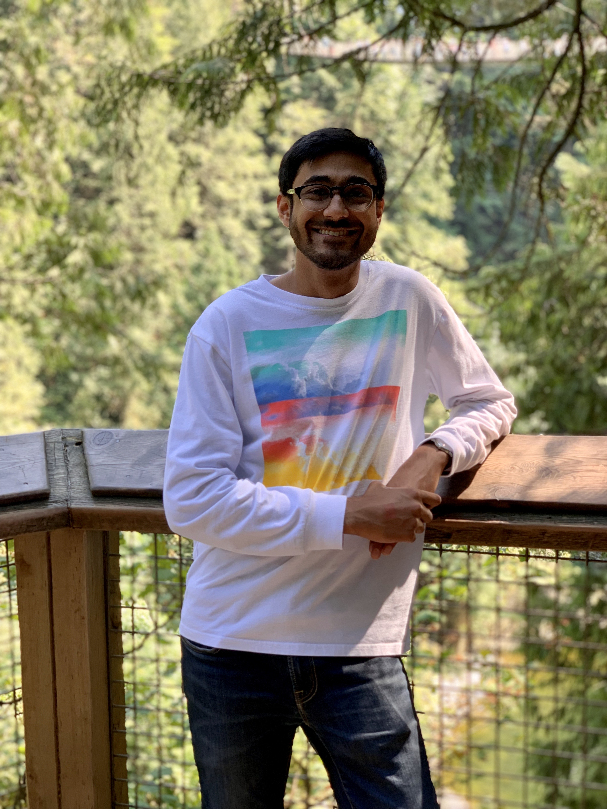

Rohan Garg
Email: rohanvgarg at gmail.com
|
 |
About
I am currently a first-year Ph.D. student working with Kent Quanrud in the Department of Computer Science at Purdue University. I recently finished my undergraduate studies at The University of Texas at Austin in the wonderful ECE department. My research interests lie in theoretical computer science.
Outside of research, I enjoy playing (rather poorly) Badminton, Soccer, Tennis and Table Tennis. I am an avid fan of the English Premier League and I support Manchester United (GGMU!). I am almost always listening to music and I enjoy hip-hop, indie/alternative, and some instrumental music. I was born and raised in Austin, Texas and truly love the city. If we share any interests or you would just like to chat, please do not hesistate to contact me!
For Fall 2020, I am one of the co-organizers for the Purdue Advanced Algorithms Reading Group!
Research
- 2020
- Fast and Work-Optimal Parallel Algorithms for Predicate Detection[arxiv]
In Submission
Rohan Garg
- 2019
- Parallel Algorithms for Predicate Detection [dl.acm]
Vijay K. Garg and Rohan Garg.
in ICDCN 2019
Teaching at UT
- Spring 2020: Undergraduate TA for EE360C - Algorithms (Instructors: Dr. Pedro Santacruz)
- Spring 2019: Undergraduate TA for EE360C - Algorithms (Instructors:Dr. Christine Julien, Dr. Pedro Santacruz)
Talks and Presentations
- Gave introdutory talk on Parallel and Distributed Computing to Purdue Theory Reading Group - Fall 2020 [slides]
- Gave talk on the Feedback Vertex Set Problem to Purdue Theory Reading Group - Summer 2020 [slides]
- Gave talk on Approximation Algorithms for the Multiway Cut and k-cut problem to Purdue Theory Reading Group - Summer 2020 [slides]
- Gave talk on network flow (Ford-Fulkerson, Blocking Flows) to Purdue Theory Reading Group - Spring 2020 [slides]
- Gave talk about undergraduate research to Women in Natural Sciences First-Year Interest Group at UT - Spring 2020
Class Projects
- On the Ability to Learn Graph Properties Using Off-the-Shelf Machine Learning Models [Fall 2019 - Spring 2020]
Final Report: [pdf]
Joint work with: Emily Ginsburg, Michael Herrington, Tara Kuruvilla, Raghav Prakash
Advised by: Sarfraz Khurshid
Honors
- Ross Fellow 2020 - 2024: "Doctoral applicants to Purdue are considered for the Ross Fellowship, which recognizes academic excellence."
Education
CS at Purdue University
- PhD Student
- 2020 - Present
University of Texas at Austin
- B.S. Electrical and Computer Engineering
- 2016-2020